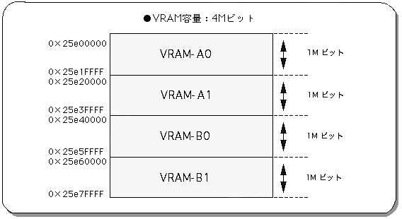
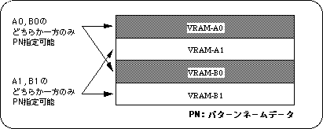
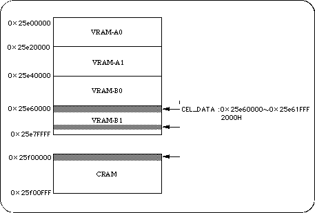
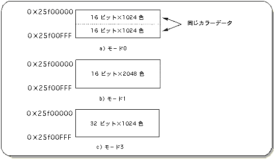

★SGL User's Manual
★PROGRAMMER'S TUTORIAL
★SGL User's Manual
★PROGRAMMER'S TUTORIAL
これを“ 8-2 項: スクロールの構成単位”で説明したスクロール画面構成単位でいうと、
ということになります。１）および２）のデータはメモリー中、ＶＲＡＭと呼ばれるメモリ領域に格納し、アクセスすることで、実際の描画に用いられます。
３）は、スクロールに使用するパレット形式のカラー情報です。
パレット形式とは、16色、256色、2048色（設定によっては1024色）のいずれかの色数を１パレットとしてキャラクタパターン単位で使用するカラー設定方式です。
カラーパレットは、
個々のカラーのＲＧＢデータ ：カラーＲＡＭに格納される パレット内でのカラー識別番号：キャラクタパターン中で使用される パレット単位での識別番号 ：パターンネームデータ中で使用される
の３つのデータで構成されます。
カラーパレットデータはメモリ中、カラーＲＡＭと呼ばれるメモリ領域に格納され、アクセスすることで、実際の描画に用いられます。


ＳＧＬはデフォルト状態で、ASCIIセルと呼ばれる文字数値表示用のスクロールデータ（カラーデータを含む）をすでにメモリ中に格納しています。
このため、デフォルト状態で格納されているASCIIスクロールデータに他のスクロールデータを上書きすると、ＳＧＬでサポートしている文字数値表示関数群が正しく使用できなくなります。
ASCIIスクロールは、128セル・256色で構成され、ノーマルスクロール画面“NBG0”を使用しています。
ASCIIスクロールデータは、次のようにＲＡＭ領域中に格納されています。
図8-7 ASCIIスクロールデータの格納領域
キャラクタデータ：0x25e60000番地から2000H マップデータ ：0x25e76000番地から1000H パレットデータ ：0x25f00000番地から20H
| カラーモード | カラービット | データサイズ | 色 数 |
|---|---|---|---|
| モード0 | RGB各5ビットの計15ビット | 1ワード | 32768色中1024色 |
| モード1 | RGB各5ビットの計15ビット | 1ワード | 32768色中1024色 |
| モード2 | RGB各8ビットの計24ビット | 2ワード | 1677万色中1024色 |
カラーＲＡＭモードは、実際のカラーＲＡＭ中、次のようなイメージで表現されます。
図8-8 カラーＲＡＭアドレスマップ
カラーＲＡＭモード０：拡張カラー演算機能を使用する際に用います。 カラーＲＡＭモード１：32768色中から2048色を使用したいときに用います。 カラーＲＡＭモード２：1677万色中から2048色を使用したいときに用います。
カラーＲＡＭモードを設定するにはライブラリ関数“slColRAMMode”を使用します。
| カラーRAMモード | |||
|---|---|---|---|
| モード0 | モード1 | モード2 | |
| 代 入 値 | CRM16_1024 | CRM16_2048 | CRM_1024 |
★SGL User's Manual
★PROGRAMMER'S TUTORIAL